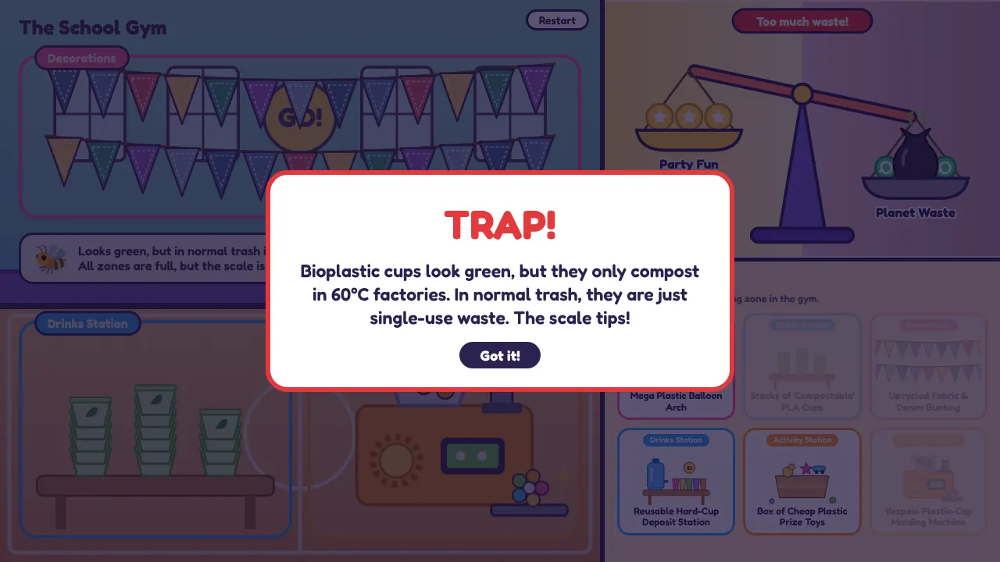

Eco-Party Planner
Planning a school party is full of choices that look harmless. This game puts each one on a balance scale, and hides a trap among the green-looking options.
Play it
Drag items from the party catalogue into the glowing zones in the gym. Can you make the scale balance?
Built for a mouse or touchscreen at laptop size or larger. On a phone, open it full screen and turn your phone sideways.
Where it started
Students hear that single-use plastic is bad. They hear much less about products that look sustainable but aren't, and those are the ones they'll actually be tempted by.
A party is something every student has planned or been to, so the choices feel real: decorations, drinks, activities. Each one has a linear option and a circular one.
The core mechanic
Two pans on a scale: party fun and planet waste. Every item adds fun, but only some add waste. The scale tips, smog fills the gym, and the coach, Vesp the bee, explains why.
Designing the mistakes

Design decisions
Every item adds fun
The point isn't that parties are bad. Every choice improves the party, so the only trade-off is waste.
A deliberate trap
One option is designed to look like the right answer. Being fooled once is more memorable than being told.
The gym reacts
Smog and a warm glow show the state of the party at a glance, before anyone reads a word.
A coach, not a judge
Vesp explains each choice in plain language and says what to swap when the scale won't balance.
How it's built
The gym, the scale and every catalogue item are drawn in SVG, and the scale uses a small spring simulation so it swings like a real balance. It shares a world with Close the loop: the plastic-cap moulding machine at the party is the kind learners run in the maker space.